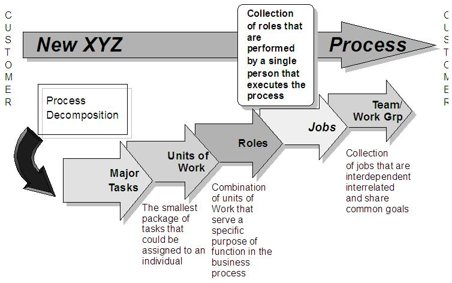

| Guideline: Developing Job Roles Responsibilities and Competencies |
 |
|
| Related Elements |
|---|
The following are the high level steps for developing Job, Roles, Responsibilities and Competencies;
1. Review current jobs The steps above should yield formatted job descriptions and documentation of enablers required for successful implementation. In addition to these deliverables is a client report. It should revisit the purpose of the initiative and articulate how the job designs will contribute to achieving the project’s intended business outcomes. Note: Most of the tools listed below apply to more than one step. Review Current Jobs

5. Next enrich the role definition to cover the following categories:
- Work
tasks/responsibilities ("perform the task")
-
Accountabilities ("own the task")
- Objectives
- Competencies
required
- Behaviors
that should be demonstrated within the role
- Measurements
for role performance
- Security
authorizations required for access to date
These should be documented within the client’s standard job
description format, unless it does not adequately define the roles; if it
does not, a revised template will need to be developed.
6. Group jobs with the same security requirements into profiles. The same profile may apply to
multiple jobs. Profiles will simplify the
structure of the security trees in any information technology applications
used in job roles.
7. Next define any changes to the management system that would be required to support the new
designs (often referred to in
Organization Change intellectual capital as "structural enablers"). Some
examples are: HR practices, compensation programs,
performance evaluation, skills management, career planning, hiring strategy,
security strategy, recognition, and incentives. The
physical environment, such as office layout and equipment, may also need to
be changed.
8. Also consider the implications that implementing the new job designs might have for the organization transition plan, and document
them.
Validate Design Feasibility
1. Check for consistency in the mapping of tasks to jobs. Ensure that the design does not
produce unnecessary overlap or process
inefficiencies.
2. Revisit the design points and evaluate how well the new designs meet them. Some refinement
may be required as a result of this test.
3. Authority levels are an important business control. Review security profiles and look for
consistency between the work being performed
and access to data. Test them on a wide variety of job titles. If the
profiles have been designed well, the number of profiles should not
grow.
4. Ask yourself whether the job description would give employees a clear understanding of
their roles and job with respect to:
5. A highly recommended approach to validation is to test the designs with an employee
focus group. Various scenarios or process
walkthroughs could be used to illustrate the real-life context of the
job. For example, the job can be modeled in its process context by
using process modeling tools such as LOVEM (see references).
6. Because all of these jobs will have to be filled, ensure that the difficulty of doing so has
been accurately gauged. Review the client’s
approach to recruitment, selection, in-placement, outplacement, reskilling,
and severance, and identify any additional
recommendations that will support implementation of the redesign.
|
| © Copyright IBM Corp. 1987, 2012 All Rights Reserved Property of IBM These materials are intended only for use as part of an IBM engagement |